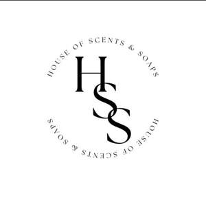

Trade Mark Journal No.2026/009 27 February 2026
UK00004334572 3 February 2026 (3,4)

- Class 3
- Soaps; Scented soaps; Bath soaps; Perfumed soaps; Soap; Soaps and gels; Shaving soaps; Non-medicated soaps; Cosmetic soaps; Cream soaps; Soap products; Facial soaps; Liquid soaps; Hand soaps; Handmade soap; Bath soap; Perfumed soap; Sponges impregnated with soaps; Cosmetic soap; Shower soap; Bars of soap; Beauty soap; Skin soap; Hand soap; Liquid bath soap; Soaps for body care; Soaps in gel form; Liquid soap; Granulated soap; Sugar soap; Body soap; Soaps for personal use; Shampoos; Body cream soap; Scented body lotions and creams; Moisturising creams, lotions and gels; Cleansing lotions; Bath lotion; Cosmetic creams and lotions; Non-medicated lotions; Scented body lotions; Oils for perfumes and scents; Body butter; Hand and body butter; Body butters; Body cream; Body milk; Body and facial butters; Body lotion; Body oil; Body oils; Body creams; Body moisturisers; Body scrub; Body and facial oils; Body mask cream; Body spray; Body scrubs; Face and body lotions; Body sprays; Body oils [for cosmetic use]; Face and body creams; Body mist; Body wash; Scented body spray; Body cream for cosmetic use; Body creams [cosmetics]; Lotions for face and body care; Hair and body wash; Body sprays [non-medicated]; Exfoliating body scrub; Body and facial creams [cosmetics]; Beauty creams for body care; Scented wax melts; Wax melts [fragrancing preparations]; Perfume; Perfumes; Perfume oils; Perfumery and fragrances; Fragrances; Cologne; Perfume water; Room perfume sprays; Liquid perfumes; Colognes; Scents; Aromatics for fragrances; Perfumery; Household fragrances; Room perfumes in spray form; Room fragrances; Perfumery products; Aftershave; Solid perfumes; Scented water for fragrancing; Air fragrance preparations; Aftershave balms; Scented oils; Scented linen sprays; Synthetic perfumery; Air fragrance reed diffusers; Aftershaves; Perfumed powder [for cosmetic use]; Incense spray; Perfumed creams; Eau de Cologne; Eau de cologne; Eau de colognes; Scented room sprays; Cosmetics; Eau de parfum; Moisturisers [cosmetics]; Scented body creams; Skincare cosmetics; Room scenting sprays; Room fragrancing products; Scented fabric refresher spray; Room fragrancing preparations; Spray cleaners for household use; Shower and bath foam; Bath and shower foam; Skin cleaning and freshening sprays; Spray cleaners for use on textiles; Scented fabric refresher sprays; Shower and bath gel; Bath and shower gel; Body fragrances; Extracts of perfumes; Natural oils for perfumes; Fragrance preparations; Fragrance refills for non-electric room fragrance dispensers; Perfumeries; Essences for fragrancing; Scented water; Perfumed potpourris; Scented bathing salts; Scented oils used to produce aromas when heated; Perfumed toilet waters; Aromatherapy lotions; Aromatics for perfumes; Perfumed oils for skin care; Aftershave lotions; Incense; Ethereal oils for fragrancing; Essential oils for fragrancing; Aromatic oils for the bath; Perfume oils for the manufacture of cosmetic preparations; Massage oils and lotions; Oils for the skin; Bath oils; Shaving oils; Hair oils; Cosmetics in the form of oils; Massage oils; Shower oils; Cuticle oils; Facial oils; Mineral oils [cosmetic]; Non-medicated oils; Oils for hair conditioning; Body massage oils.
- Class 4
- Candles; Candles and wicks for candles for lighting; Tealight candles; Votive candles; Scented candles; Candles for lighting; Fragranced candles; Candles and wicks for lighting; Candles in tins; Perfumed candles; Candles (Perfumed -); Soy candles; Table candles; Tea light candles; Church candles; Fruit candles; Floating candles; Aromatherapy fragrance candles; Wax for making candles; Candle wax; Grave candles, non-electric; Special occasion candles; Wax lights; Tea lights; Candles containing insect repellent; Paraffin wax; Vegetable wax; Oils for fragrancing.
Sarah Winchester